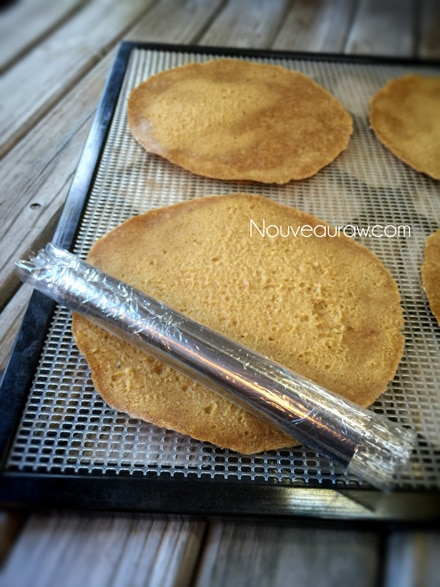
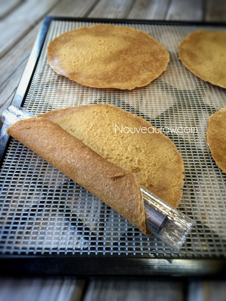
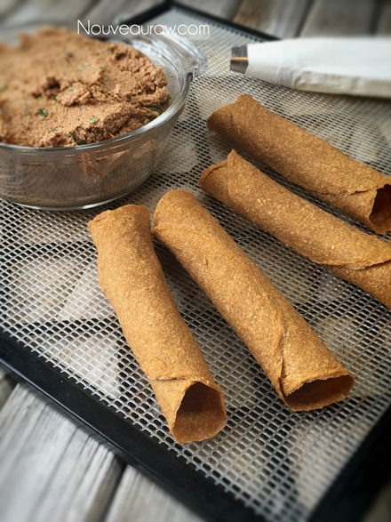
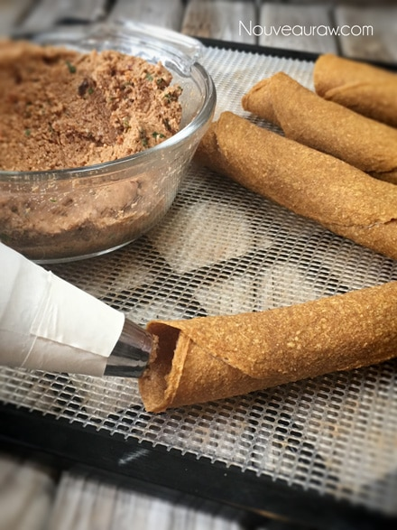
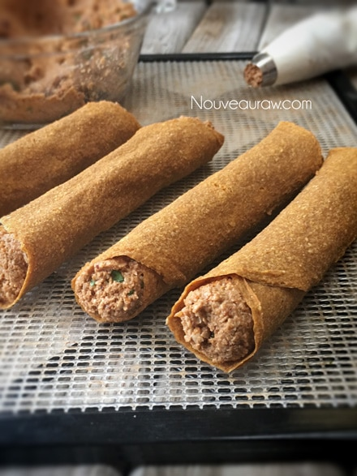
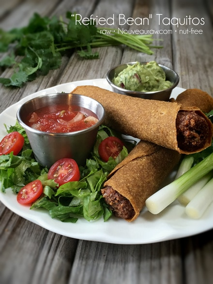

“Refried Bean” Taquitos
~ raw, nut-free, gluten-free ~
A taquito (taˈkito), is basically a small rolled taco, which is also referred to as a flauta meaning flute, in Spanish. It is a Mexican dish most often consisting of a small rolled-up tortilla with some type of filling, including beef, cheese or chicken. The filled tortilla is fried crisp and often topped with condiments such as sour cream and guacamole. My goal was to make a healthy raw version.
First, I needed to achieve a corn-based tortilla that would dehydrate hard and crispy. This took a few tries, but through perseverance, I succeed. (sponges off forehead) It was not really an easy task. Too brittle, cracked in half, too doughy… oy vey. :) Determination is one of my strong suits… thank goodness.
The key when making this wrap/tortilla/taquito is catching it in just the right dry/moist spot so you can roll it. I will go more in-depth below in the instructions, but I just wanted to let you know upfront that you can’t start the drying process and become absent-minded, forgetting all about it. :)
Once the taquito shells are done, you will be piping in the filling. That part is easy and actually pretty darn fun. Once they are fully constructed, you can eat them right away, or you can pop them back into the dehydrator for a few hours to warm them through. Nothing beats a warm and crunchy taquito! If you end up with leftovers, they will have soften a bit on the bottom. The moisture from the filling causes this to happen. They still taste amazing, but you can throw them back in the dehydrator to crisp things up if you want.
I hope you enjoy this nut-free, gluten-free, soy-free, diary-free, vegan, recipe as much as we did. Please leave a comment below… I would love to hear your thoughts. Blessings, amie sue
yields 8-10 taquitos
Taquito shells:
- 2 cups frozen, organic corn
- 2 1/4 cups (328 g) chopped zucchini, peeled
- 2 1/2 cups (300 g) yellow bell pepper
- 2/3 cup diced white onion
- 1 Tbsp lemon juice
- 1/2 tsp Himalayan pink salt
- 1/4 tsp cumin powder
- 2 tsp chili powder
- 1 garlic clove
- 1 cup flax seeds, ground
“Refried beans:”
- 2 cups sunflower seeds, soaked
- 3/4 cup sun-dried tomatoes, re-hydrated
- 1 Tbsp cold pressed olive oil
- 2 tsp chickpea miso
- 1 tsp cumin
- 2 tsp chili powder
- 1 tsp Himalayan pink salt
- 2 garlic cloves
- 1/4 cup diced red onion
- 2 Tbsp minced fresh cilantro
- 1/4 cup tomato soak water
Preparation:
Taquito shells- Yields 9 (1/3 cup)
- In a food processor, fitted with the “S” blade, combine the frozen corn, zucchini, bell pepper, onion, lemon juice, salt, cumin, chili powder, and ground flaxseed. Process until the batter is smooth.
- Line the dehydrator tray with a non-stick sheet. Using a 1/2 cup measuring cup, place the batter on the tray positioning 1 in each corner of the tray.
- Spread the batter into a 6″ circle with an off-set spatula.
- Dehydrate at 145 degrees (F) for 1 hour, reduce to 115 degrees (F) and continue to dehydrate for about 6 hours or until they are dry enough to transfer to the mesh sheet.
- While the shells are still pliable, wrap them around a plastic-covered cannoli form which can be found here.
- Continue to dehydrate for up to 24 hours or until dry and hard.
- Store once cooled, in a ziplock.
- If they are exposed to a lot of humidity, they will start to soften.
- You can crisp them back up by placing them in the dehydrator.
- They can last up to several weeks if well sealed and protected.
“Refried beans” yields 2 3/4 cups
- After soaking the sunflower seeds, drain and discard the soak water. Place in the food processor, fitted with the “S” blade.
- Soaking decreases the phytic acid, making them easier to digest. It also plumps them up, giving you more volume and lastly, it softens them, so they blend creamier.
- After re-hydrating the sun-dried tomatoes, drain and keep the soak water. Place the tomatoes only in the food processor.
- Re-hydrating softens the tomatoes for blending. I didn’t use dried tomatoes packed in oil. If you do, don’t re-hydrate them.
- You will add roughly 1/4 cup of soak water towards the end of mixing.
- Add the oil, chickpea miso, cumin, chili powder, salt, and garlic. Start to process into a thick pate-like texture. Add the soak water from the tomatoes as needed, so it blends smoothly together. Process until you can’t identify the sunflower seeds.
- All ingredients are added for end flower and texture. If you can’t find miso, just omit it and don’t worry about subbing it out.
- Add the onions and pulse in.
- Hand stir in the minced cilantro.
Assembly:
- Place the piping tip in the bag, slide the bag into a jar and fold the edges over the rim of the jar. This will give you a free-standing hand in filling the bag with the refried bean mixture.
- Add the filling and gently work out any air bubbles.
- Hold the taquito shell in the palm of your hand. Place your index finger over the hole on the far end of the shell.
- Place the piping tip in the other end and gently squeeze the refried beans into the shell. Your finger on the other end will prevent it from squirting out.
- Fill the shell all the way to the opening. Turn the shell around and squeeze a bit more on the other end just to get it nice and full.
- Eat right away or warm in the dehydrator at 145 degrees (F) for 30-60 minutes. Warming them will also darken the “beans.”
- To create as an appetizer, cut into 1″ bite-size pieces and serve on a platter with dipping sauce.
- What is Himalayan pink salt and does it really matter? Click (here) to read more about it.
- Learn how to grind you own flaxseeds for ultimate freshness and nutrition. Click (here).
- Be selective when purchasing corn.
Culinary Explanations:
- Why do I start the dehydrator at 145 degrees (F)? Click (here) to learn the reason behind this.
- When working with fresh ingredients, it is important to taste test as you build a recipe. Learn why (here).
- Don’t own a dehydrator? Learn how to use your oven (here). I do however truly believe that it is a worthwhile investment. Click (here) to learn what I use.






© AmieSue.com